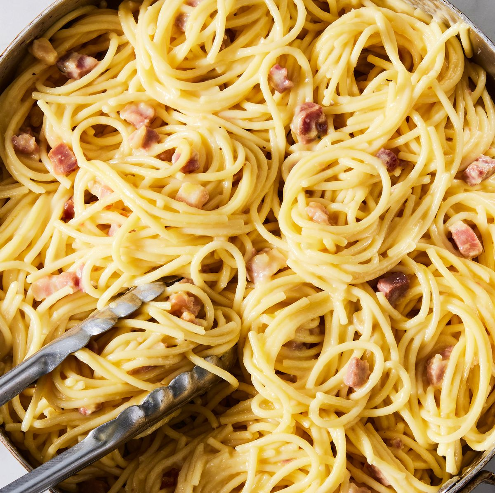

French carbonara

Description
The French recipe for carbonara is rather unique as it uses heavy cream ("crème fraiche") and matchstick size lardons rather than bacon or porcetta.
Ingredients
- 500g of pastas (tagliatelli)
- 3 eggs
- 1 cup of crème fraiche
- 1 onion
- 1/2 pound of lardons
- 1 cup grated parmesan
- A pinch of garlic powder
- A pinch of salt and pepper
Steps
- Bring a pot to boil with water and add the pasta along with a pinch of salt.
- While the pasta is cooking, in a separate pan sauté the bacon lardons and the onions until the bacon is crispy. (Remove from heat once cooked.)
- In a mixing bowl, combine the raw eggs, crême fraiche, garlic powder and salt and pepper.
- When the pasta is al dente, drain the water and return to the cooking pot on reduced heat.
- Add the egg and cheese mixture to the pasta along with the bacon and onions.
- Combine the mixed pasta on reduced heat for around 5-7 minutes, adding additional parmesan if necessary.
- Serve immediately.